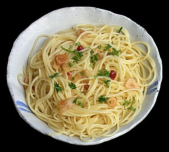
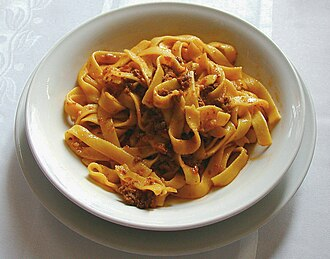
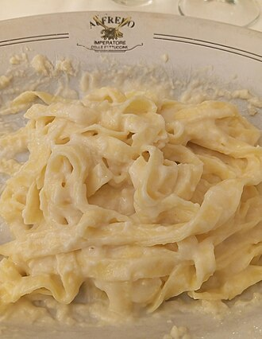
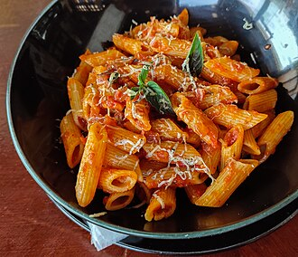
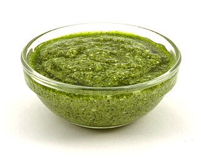
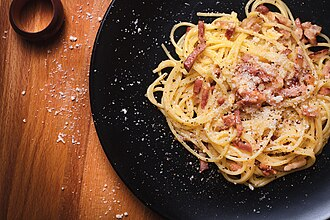
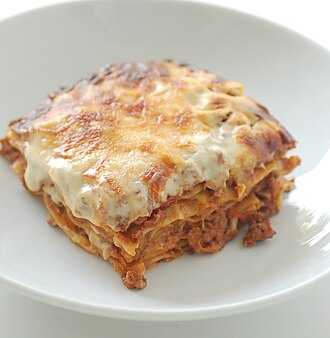
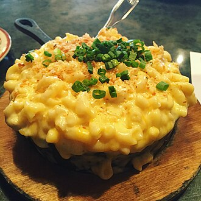

Simple Pasta Recipes
Here are 8 easy pasta recipes you can make at home. Click the "Hide / Show Recipe Details" button on any card to collapse or view its steps.

1. Spaghetti Aglio e Olio
A classic and quick Italian pasta made with garlic, olive oil, and red chili flakes.
Ingredients
- 200g Spaghetti
- 4 cloves Garlic (sliced thin)
- 3 tablespoons Olive oil
- 1 teaspoon Chili flakes
- Fresh chopped Parsley
- Salt to taste
Method
- Boil the spaghetti in salted water until cooked.
- Heat olive oil in a pan on low heat.
- Add sliced garlic and chili flakes, and cook gently until golden.
- Add the cooked spaghetti and a splash of pasta water.
- Mix well with chopped parsley.
- Serve warm.

2. Spaghetti Bolognese
A hearty pasta dish served with a rich tomato and minced meat sauce.
Ingredients
- 250g Spaghetti
- 200g Minced meat (or soy granules)
- 1 Onion (chopped)
- 2 cloves Garlic (minced)
- 1 cup Crushed tomatoes / tomato puree
- 1 teaspoon Dried oregano
- 2 tablespoons Olive oil and Salt
Method
- Heat olive oil in a saucepan and fry chopped onion and garlic.
- Add the minced meat and cook until browned.
- Pour in the crushed tomatoes and oregano.
- Simmer the sauce on low heat for 15-20 minutes.
- Boil the spaghetti in salted water and drain.
- Serve the hot sauce over the spaghetti.

3. Fettuccine Alfredo
Creamy and comforting ribbon pasta tossed in butter, cream, and parmesan cheese.
Ingredients
- 200g Fettuccine pasta
- 2 tablespoons Butter
- 1 cup Heavy cream (or cooking cream)
- 1/2 cup Grated Parmesan cheese
- 1 clove Garlic (minced)
- Salt and Black pepper
Method
- Boil fettuccine in salted water until tender, then drain.
- Melt butter in a pan and lightly saute the garlic for 1 minute.
- Pour in the cream and let it simmer gently for 3 minutes.
- Stir in the grated parmesan cheese until smooth.
- Add the cooked fettuccine and toss to coat evenly.
- Season with salt and black pepper and serve.

4. Penne Arrabbiata
Spicy short tube pasta cooked in a tangy garlic and red chili tomato sauce.
Ingredients
- 200g Penne pasta
- 1.5 cups Tomato puree or chopped tomatoes
- 3 cloves Garlic (finely chopped)
- 1 teaspoon Red chili flakes
- 2 tablespoons Olive oil
- Fresh basil or parsley and Salt
Method
- Boil penne pasta in salted water and drain.
- Heat olive oil in a pan and fry the garlic and red chili flakes.
- Add the tomato puree and a pinch of salt.
- Cook on medium-low heat for 10 minutes until the sauce thickens.
- Add the boiled penne into the sauce and mix well.
- Garnish with basil or parsley and serve.

5. Pesto Pasta
Fresh and aromatic pasta coated with green basil, garlic, and cheese pesto sauce.
Ingredients
- 200g Fusilli or Linguine pasta
- 4 tablespoons Basil pesto sauce
- 2 tablespoons Grated Parmesan cheese
- 1 tablespoon Olive oil
- Salt and Pepper to taste
Method
- Boil the pasta in salted water according to package time.
- Save 2 tablespoons of the warm pasta cooking water before draining.
- Place the drained pasta in a mixing bowl.
- Add the basil pesto, olive oil, and splash of pasta water.
- Toss everything together so the sauce coats the pasta smoothly.
- Top with parmesan cheese and serve.

6. Carbonara
Traditional Roman pasta made with eggs, hard cheese, crispy bacon/pancetta, and black pepper.
Ingredients
- 200g Spaghetti
- 2 Eggs
- 1/2 cup Grated Pecorino or Parmesan cheese
- 100g Diced bacon or pancetta
- 1 teaspoon Freshly ground black pepper
- Salt for pasta water
Method
- Boil the spaghetti in salted water.
- In a small bowl, whisk the eggs, grated cheese, and black pepper together.
- Fry the diced bacon in a pan until crispy, then turn off the heat.
- Add the hot drained spaghetti directly to the pan with the bacon.
- Quickly pour in the egg and cheese mixture while tossing with a spoon of pasta water so it forms a creamy sauce.
- Serve immediately with extra black pepper.

7. Lasagna
Baked layers of flat pasta sheets, tomato sauce, creamy white sauce, and melted cheese.
Ingredients
- 6-8 Lasagna pasta sheets
- 2 cups Tomato and vegetable (or meat) sauce
- 1 cup White sauce (bechamel) or Ricotta cheese
- 1.5 cups Shredded Mozzarella cheese
- 1 teaspoon Italian herbs
- Salt to taste
Method
- Preheat the oven to 180°C (350°F).
- Boil the lasagna sheets for a few minutes until slightly soft (unless using oven-ready sheets).
- Spread a thin layer of tomato sauce at the bottom of a baking dish.
- Place a layer of lasagna sheets, followed by tomato sauce, white sauce, and mozzarella.
- Repeat the layers and finish with extra mozzarella cheese on top.
- Bake for 25-30 minutes until bubbling and golden brown.

8. Macaroni and Cheese
Simple and popular comfort food made with elbow macaroni and a warm cheddar cheese sauce.
Ingredients
- 200g Elbow Macaroni
- 2 tablespoons Butter
- 2 tablespoons All-purpose flour
- 1.5 cups Warm milk
- 1.5 cups Grated Cheddar cheese
- Salt and a pinch of pepper
Method
- Boil the macaroni in salted water for 8 minutes, then drain.
- Melt butter in a saucepan and stir in the flour for 1 minute.
- Slowly pour in the warm milk while stirring so no lumps form.
- Cook until the milk mixture thickens slightly, then turn the heat to low.
- Add the grated cheddar cheese and stir until completely melted.
- Mix the cooked macaroni into the cheese sauce and serve hot.